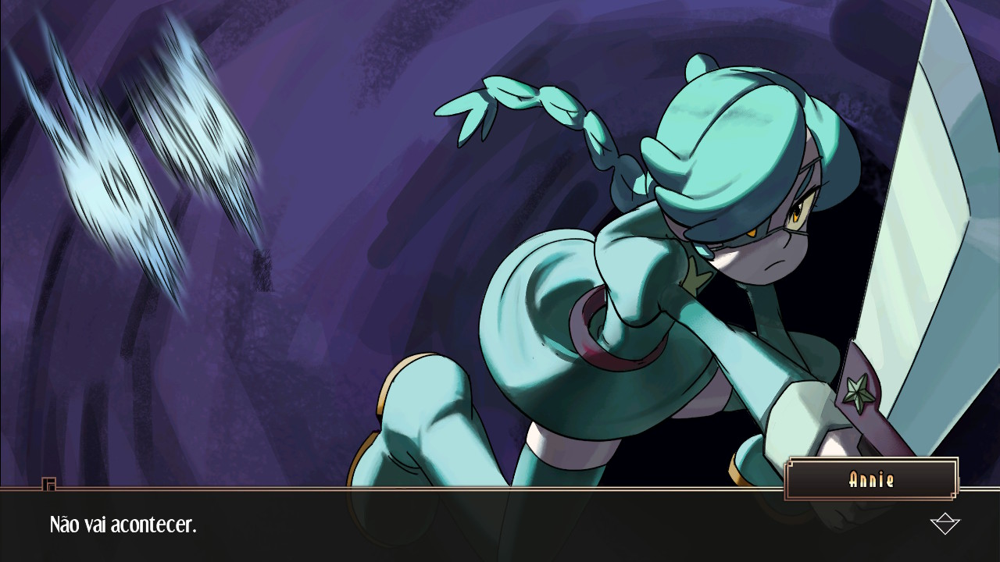

A história de Annie | SkullGirls Game
Annie sem dúvidas é uma das personagens mais carismática de Skull Girls, é famosa e querida pelos seus fãs, onde passa a missão que sempre deve praticar o bem e construir um mundo melhor. Essa ideia fica bem clara no game no modo história. Porém nem tudo são flores.
Ela sempre se aparenta bem jovem e uma famosa atriz de TV que apresenta o seu próprio programa: Annie Of The Stars, em tradução livre para o português do Brasil: Annie Das Estrelas. Mas, no decorrer da jogatina revela se que Annie está viva a muitos anos, há séculos na verdade e buscar derrotar de vez o Skull Heart (Coração crânio), isso porque ela foi amaldiçoada a nunca poder crescer pelo próprio mal que visa colocar um fim.

Para tamanho feitio, ela uniu diversos equipamentos e um mistérioso parasita de nome Sagan, que a ajuda durante as lutas sedo um escudo, sendo uma arma que engole seu oponente e ao ser batido no chão o cospe causando danos letais a suas vitimas. Ela tem diversos poderosos golpes incluindo o Star Power, o poder que a permite causar danos reais aos seus adversários e proteger o mundo dos perigos causados pelo Skull Heart. Isso sem falar em sua pesada e afiada espada que sempre usa em combate.

A sua história é uma caixinha de surpresas, apesar de suas dificuldades ela nunca desiste de batalhar e superar as forças malignas. 